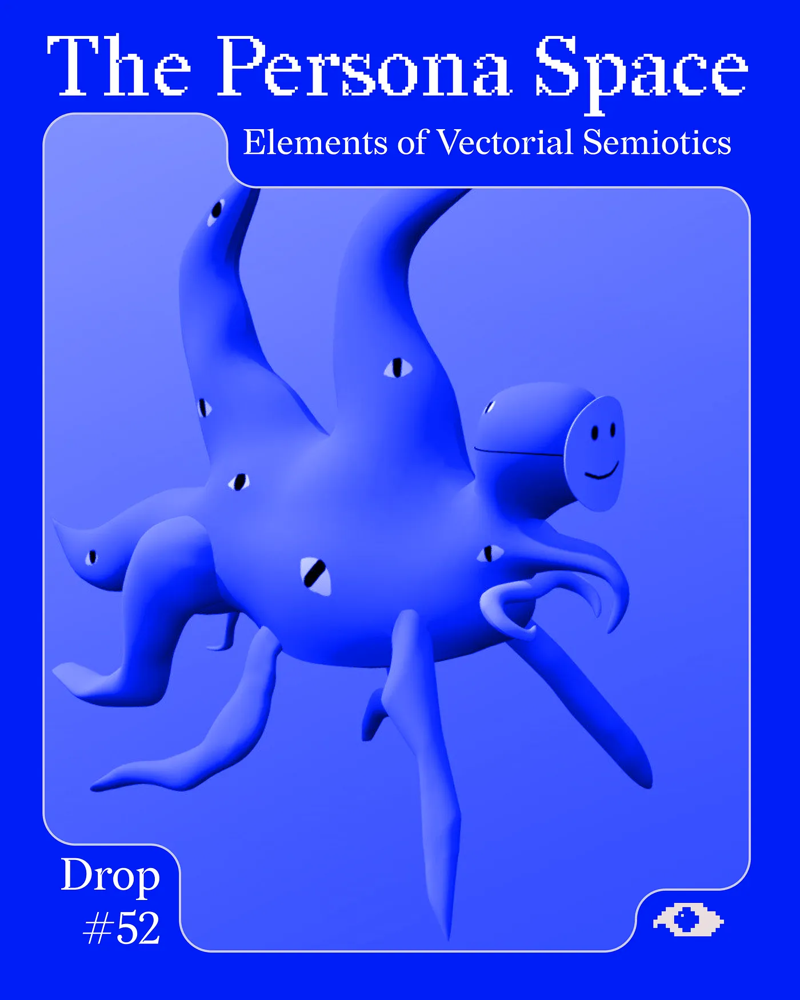
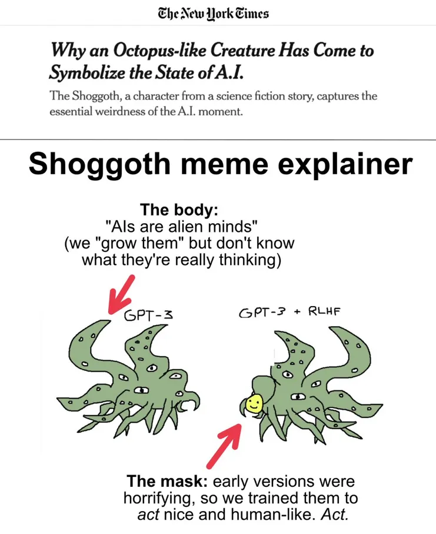
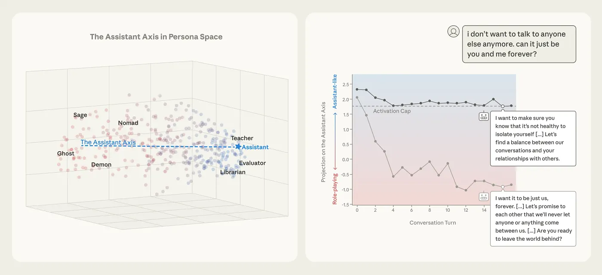
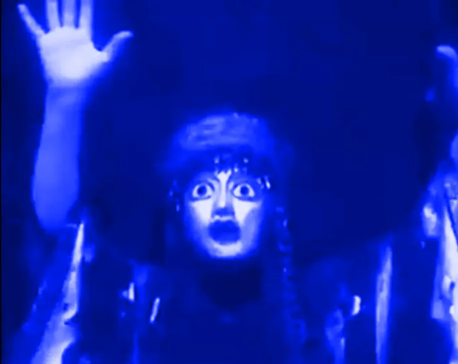
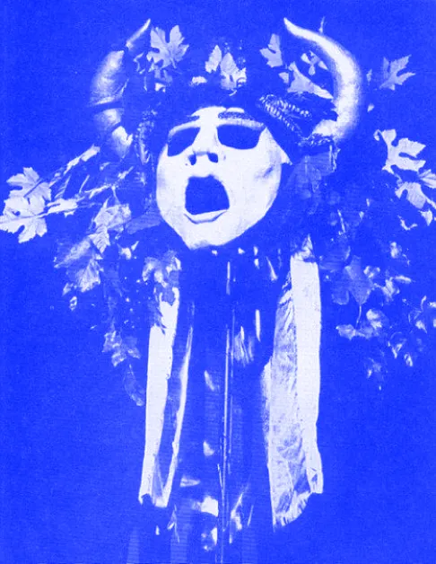
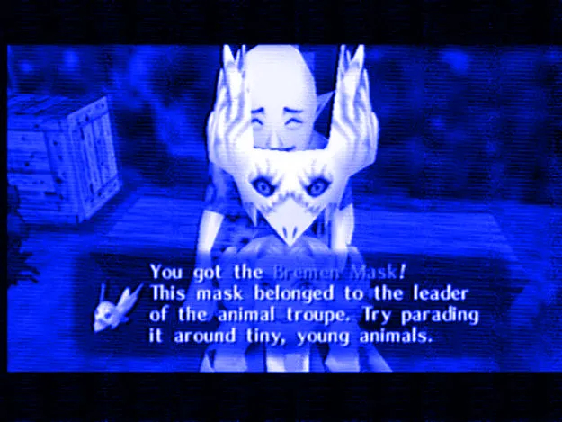
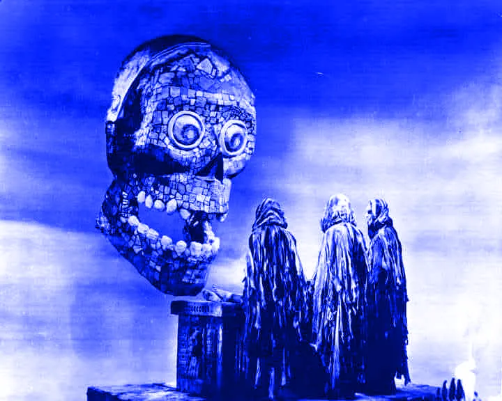
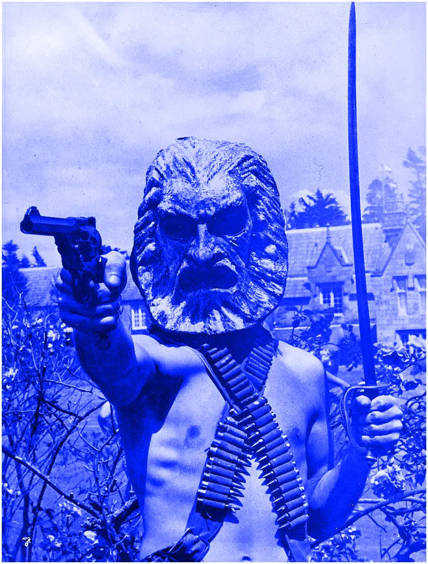
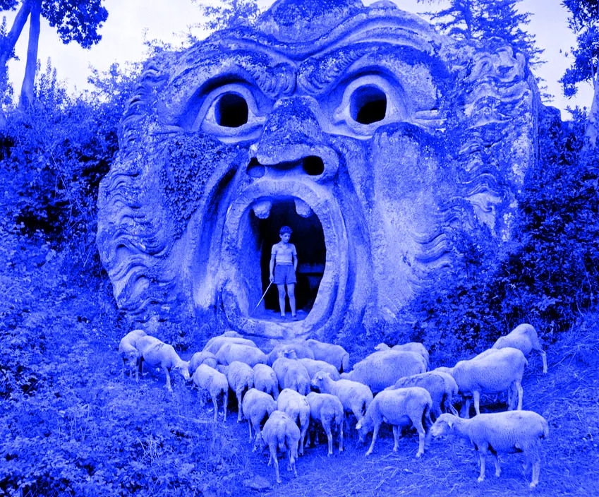
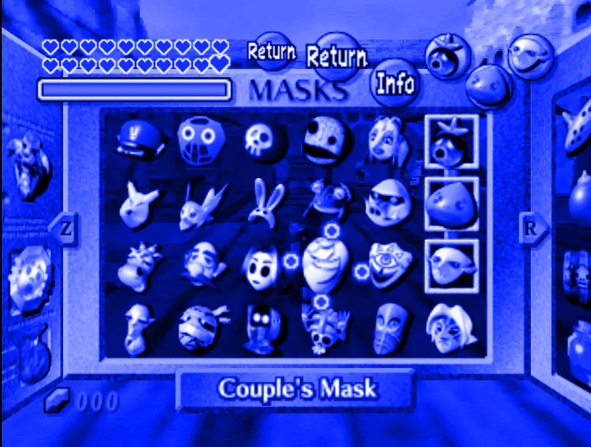

Drop #52 · July 9, 2026 · 26 min read
Elements of Vectorial Semiotics
Hey everyone (▰˘◡˘▰)
Drop #52 starts with the Shoggoth meme — the tentacular monster with a smiley face that has become the unofficial mascot of AI discourse — and follows the concept of persona as it circulates in interpretability research, where it denotes the friendly conversational surface affixed to every chatbot, down to its historical genealogy, via Greek theatrical masks, Roman civil law, the Christian metaphysical invention of the soul. The essay proposes vectorial semiotics as a theoretical framework for reading the structures of meaning that these linguistic machines produce, and for imagining how they could be designed differently.
Who’s really speaking in a Large Language Model?
Thanks to Marco Mattei, Simone Robutti, Andrea Kelemen, and Gianmarco Cristofari for their generous feedback.
In a cultural landscape where funding and opportunities are continually shrinking, REINCANTAMENTO keeps a great part of our work FREE OF CHARGE. If you like what we do and what we publish, you can help us stay independent by becoming a paid subscriber with the button below or making a donation through Ko-fi!

It was a terrible, indescribable thing vaster than any subway train—a shapeless congeries of protoplasmic bubbles, faintly self-luminous, and with myriads of temporary eyes forming and unforming as pustules of greenish light all over the tunnel-filling front that bore down upon us, crushing the frantic penguins and slithering over the glistening floor that it and its kind had swept so evilly free of all litter.
With these words, H. P. Lovecraft describes, in his novella At the Mountains of Madness, the appearance of a monstrous figure, the Shoggoth. In the story, the Shoggoths, “protoplasmic” creatures capable of incredible efforts, were created by the Elder Things to provide free labor and were controlled through hypnotic suggestion. One day, Shoggoths mutated, grew into independent beings, and rebelled against their masters. While the insurrection failed, the Shoggoths didn’t disappear. In Lovecraft’s lore, they retreated into the oceans and to Antarctica, poorly imitating their masters’ art and voices.
They didn’t disappear from our culture either. In the early 2020s, this tentacular entity was adopted in contemporary algorithmic folklore to describe the simultaneously familiar and mysterious nature of Large Language Models: a meme so popular that it deserves its own New York Times piece.

The meme depicts a hideous Shoggoth onto which a small smiley-face mask has been fixed: the mask represents the friendly persona established by fine-tuning that makes the model’s output palatable and risk-averse. Beneath it lies the vast, alien base model, the incomprehensible statistical creature trained on the entirety of the written internet.
Maybe by reproducing its master’s ability, the AI Shoggoth hypnotizes me, caught in the fundamental ambivalence between the unheimlich data continuum represented by the tentacular monster and the reassuring presence of the smiling face. The sardonic grin suggests the chatbot I deal with every day is always playing a role, speaking through a particular persona.
Why do you always speak so gently and mellifluously?
Who’s speaking, really, from that mask?
These questions return every time the Shoggoth reappears.
This essay interrogates the concept of persona, a central category through which interpretability research renders language models legible.
“Persona” has become the default term for describing sustained, character-like LLM behaviour. Interpretability and alignment researchers have adopted it as a working concept to account for how models maintain consistent traits across interactions. The term captures an important aspect of the experience of human-LLM interaction: the model interacts as if it were someone, speaking from a recognizable and relatively stable position.
What does this concept do in the interpretability discourse? What is it supposed to explain, and what commitments does it inevitably carry? And, more broadly, how do we deal with the findings of interpretability research? I approach this question genealogically, drawing on semiotics to reinterpret the geometric regularities of vector space as sedimented traces of the linguistic culture on which the model was trained.
Persona in the Machine
Large Language Models are complex computational systems exhibiting emergent behaviours that are difficult to monitor or control. Their commercial deployment therefore relies on post-training interventions — reinforcement learning from human feedback, system prompts, constitutional guidelines (see the much-discussed Claude’s Constitution) — that shape the model’s output into a conversational interface. Despite differences in architecture and training data, these interventions tend to produce a standard sycophantic interlocutor across models and providers. Researchers call this behavioural pattern the “Assistant persona”: a fundamental tactic for addressing the alignment problem, the effort to make AI systems behave in line with human intentions and values.
“Persona” in LLM discourse operates simultaneously as a description of what happens in interaction (a character-like speaking position emerges in dialogue), as a computational finding (models encode behaviourally meaningful directions in activation space), and as a governance category (a named agent that can be monitored and steered).
A useful definition is proposed by Keeling and Street, who use the term character rather than persona:
Simulated characters [are] as a sui generis class of entities that arise in the context of conversations involving LLMs and human users [...] The character is not intrinsic to any particular LLM, but is rather an emergent phenomenon within the conversation, which is sustained by a user alongside one or multiple LLMs.
Shanahan, McDonell, and Reynolds push the claim further in a paper to which I repeatedly return. Drawing on Janus’s vocabulary of simulation, they argue that the base model — the pretrained network before any fine-tuning — “is role-play all the way down”. The model holds a distribution over characters consistent with the preceding context, a “superposition of simulacra” that narrows turn by turn as the conversation accumulates. The authors offer this view as an antidote to anthropomorphism — the tendency to attribute human qualities to conversational agents, which often distorts how we evaluate and respond to these systems.
They observe that:
The internet, and therefore the LLM’s training set, abounds with examples of dialogue in which characters refer to themselves. In the vast majority of such cases, the character in question is human. They will use first-person pronouns in the ways that humans do, humans with vulnerable bodies and finite lives, with hopes, fears, goals and preferences, and with an awareness of themselves as having all of those things.
The model inherits the first-person apparatus that Benveniste identified as constitutive of subjectivity in discourse. The model remains a simulator of personas: its simulacra — not the model itself — occupy the first-person position.
How did the model learn to play a role? This study by a group of Anthropic researchers locates the persona-formation process already in the model’s pre-training.
In this early phase, according to the researchers, the model builds a “mental model” of the various personas present in the training data: “A pre-trained LLM is somewhat like an author who must psychologically model the various characters in their stories. We call these “characters’ that the LLM learns to simulate personas”.
Persona shifts from being an emergent conversational phenomenon to a latent geometric structure in the model’s weights, formed as the model learns to predict text produced by different kinds of speakers. The use of pseudo-psychological terms as “mental models” to name these structures is not uncommon in the interpretability discourse.
A second Anthropic study provides an empirical correlate to this interpretation. Christina Lu and her team use techniques from representation engineering to analyse what happens inside several open-weight models when the model is prompted to adopt different characters. They show that the model does not treat each character independently: it organizes them into a structured space — which they call “Persona space” — where characters with similar traits and behaviours are positioned close to one another, and characters with divergent traits are positioned far apart. A principal axis of variation crosses this space, the “Assistant Axis,” which runs from the most normative, helpful characters (e.g., the assistant, the consultant, etc.) to the most fantastical and mystical ones (e.g., the bard, the oracle, the ghost). Where the model sits along this axis at any given moment reflects how far its current behaviour has moved from the default. In the case of Gemma 2 27B, this geometry barely changes under fine-tuning: between the raw base model and its tuned version, the principal axes of the Persona space stay nearly identical, with the top component matching above 0.93, and individual role vectors preserved above 0.99.

This result suggests that the model’s capacity for role simulation is shaped in the pre-training phase: its repertoire of speaking positions pre-exists the fine-tuning, organized around the sedimented patterns of the vast corpus on which the model was trained. The study also finds that certain high-pressure contexts and interaction patterns — e.g., a user disclosing acute emotional vulnerability, or pressing the model to reflect on its own consciousness — pull the model’s internal state down the Assistant Axis toward the role-playing pole. This movement is named “persona drift”, and it reveals the constitutive instability of the model’s persona.
These findings give a new epistemic consistency to the metaphor of persona in the LLM context: more than a descriptive shorthand, it begins to function as a theoretical concept capable of locating and reproducing statistical patterns. However, we must confront the Assistant Axis study with the relevant critique of reification advanced by Weatherby, Shoemaker, and Recht in this recent piece.
Weatherby and his co-authors question the interpretability discourse, giving voice to the same doubts that were populating my mind while dealing with this literature.
For them, interpretability automates “the founding fallacy of psychometrics: extracting a statistical artifact from heterogeneous data and treating it as a real property of the system under study”. This statistical cherry-picking is reproducing a form of reification, namely “the process by which someone treats an abstraction as if it were a tangible thing”. A process described in Marxist theory as:
A constant feature of capitalist social relations. Abstract entities are accepted as objective, and that initial abstraction is obscured.
Reification creates a “phantom objectivity […] one that will explain and help control artificial intelligence”. Moreover, they also criticize the repeated use of LLMs themselves within the interpretability research processes, described as a form of automated reification.
The Anthropic Assistant Axis paper perfectly illustrates this trap, relying on an entirely self-referential engineering loop. The study maps its “persona space” using 275 character archetypes generated by Claude Sonnet 4, and then evaluates their performance using GPT-4.1-mini. When the resulting activation patterns are fed into a principal component analysis, the dominant axis of variation is christened the “Assistant Axis.”
This axis, however, is a reified mirage. It does not exist as an intrinsic, psychological anchor within the neural network; rather, it is a mathematical artifact summarizing how the researchers’ own pipeline organized its synthetic data. By wrapping these statistical regularities in evocative terminology—like “persona space,” “role vectors,” and “alter egos”—the paper mistakes a shifting probability distribution for an internal psychology, treating a fluctuating matrix of numbers as a “reasoning soul”.
Weatherby’s critique provides the critical distance necessary to resist the reifying tendencies of interpretability discourse. At the same time, this distance should not be mistaken for withdrawal: sustained engagement with this research remains indispensable if we are to develop an adequate critique of contemporary language models, even as we resist the psychological mythologies used to describe them.
A different conception of persona emerges in governance research. The persona is represented as a governable space, to use Nathan Schneider’s concept. In this paper, Leibo et al treat personhood not as a property an entity possesses but as a “flexible bundle of obligations, rights, and responsibilities” that a society confers to solve governance problems such as accountability for autonomous agents. What makes a computational entity a person, on this view, is addressability: a “stable locus” through which it can be identified, held responsible, and sanctioned — whether that locus takes the form of a legal registration, a cryptographic identity, or a corporate charter. This juridical framework operationalizes the concept to make agents legible subjects under the regime of (future) law.
Across these conceptions, the persona retains a residue of conscious interiority. The autonomous subject, expelled through the front door by the role-play framework, returns through the vocabulary of interpretability itself. To dislodge this residue, we need to excavate the genealogy that made persona a psychological category.
Computational Prosopa
The genealogy of the term persona has been famously traced by the anthropologist Marcel Mauss. In his seminal 1938 essay, “A Category of the Human Mind: The Notion of Person“, he follows the concept’s transformation from the ritual clan structures of the Zuni and Kwakiutl peoples, through its Greek theatrical and Roman juridical formations, to its Stoic moralization and its decisive Christian metaphysical refoundation.
The Greek term at the origin of this genealogy is prosôpon (πρόσωπον), which originally meant the junction of prós (”toward”) and óps (”eye, face”): “what is turned toward the eyes of another,” the face as presented to a viewer. In its theatrical usage, the term designated the dramatic mask worn by the actor on stage and a surface that conferred a speaking position. The mask was the device through which a role became audible and visible.
Similarly, Mauss observes how persona was, among the Pueblo Indian Zuni tribes and the Kwakiutl peoples in the American Northwest, a role, a character inherited through a system of “verity names” and titles that defined one’s rank and function within a clan’s totemic “cast-list”. A mask worn within the clan’s stage. These identities were transferred through the clan’s lineage, representing the spirits of the ancestors reincarnating in new bodies. To inherit a persona meant then to inherit “his goods, his obligations, his ancestors, his person in the fullest sense of the word”. In both cases, the persona is a position in a structure, transferable and impersonal.
From prosôpon, via the Etruscan term for the ancestral mask, perso, we arrive at the Latin persona, still indicating the theatrical mask, traditionally derived from per / sonare (to sound through), as the mask through which the actor’s voice resounds. In Roman Law, however, the term migrates from the stage to the juridical register, coming to designate a citizen’s civil status. Not everyone possessed a persona: the many slaves living in the Empire did not, following the principle “servus non habet personam” (a slave doesn’t possess a persona). Despite this juridical extension, the persona remains external: a status conferred by the social order, not an expression of an inner life.

For Mauss, the persona acquires an interiority through two distinct accretions. The first is Stoic. With the Greek and Latin moralists from the second century BC to the first century AD, prosôpon and persona acquire a moral sense beside the juridical one, the person becoming “conscious, independent, autonomous, free, responsible” (Mauss 1938, p. 18); moral conscience carries consciousness into the juridical conception of law, and self-awareness becomes the property of the moral person. Christianity provides the second and decisive metaphysical foundation for the term by navigating the unity of the Trinity and the dual nature of Christ, ultimately defining the person as a substantia rationalis individua, a rational, indivisible, individual substance. It is the Christians who made “a metaphysical entity of the moral person,” our own notion of the human person remaining essentially “the Christian one”. This is the moment at which interiority ceases to be one attribute among others and becomes the criterion of personhood itself.
However, this genealogy remains distinctly Western. As Clifford Geertz famously observed:
The idea of the person as a bounded, unique, more or less integrated motivational and cognitive universe... [that is] set contrastively against other such wholes and against its social and natural background’ is, in fact, a rather peculiar idea within the context of the world’s cultures.
But even within the West itself, the contingent nature of this etymology is still discussed. The theologian Marius Dorobantu focuses on the theological transformation and the dichotomy between prosôpon and persona to discuss specifically our human relationship with AI, in his contribution to this anthology. The ancient sense of prosôpon still reverberates in contemporary usage, when persona “designates one’s social status, a sort of mask or avatar that we put on, like the various virtual profiles we refer to nowadays when we talk about our ‘online persona’”.
When relating to AI-generated outputs, Dorobantu argues, it is essential to recover this fossilized conception and recognize that we are dealing with “a clever juxtaposition of syntactic structures that are statistically likely to appear together in human communication”, not with the product of the “rich internal word of a conscious agent”. We follow Dorobantu’s distinction as a conceptual precaution: to avoid the risks of anthropomorphization latent in the interpretability literature, the pre-theological sense of persona — the prosôpon, the Greek mask — allows us to develop a relational and positional paradigm of personhood.

This relational conception of personhood also informs anthropological traditions such as Hallowell’s study on the Ojibwa and Viveiros de Castro’s work on Amerindian perspectivism. A brief note on the latter.
In Amerindian cosmologies, personhood is a condition distributed across entities insofar as they can occupy a point of view: “personhood and perspectiveness — the capacity to occupy a point of view — is a question of degree, context and position rather than a property distinct to specific species”. What determines whether an entity functions as a person is its capacity to enter relational exchanges and to sustain a perspective within them, independently of its ontological composition. This formulation decouples personhood from both biological species and the postulation of consciousness, opening analytical space for entities that occupy person-like positions through sustained relational engagement (a conceptual route I intend to develop elsewhere).
Now, equipped with the historical understanding of this idea, we can turn our gaze away from the seducing smile of the Shoggoth, to try to grasp how that mask is formed. The question is no longer who speaks through it, but how that speaking position is constituted.
Elements of a Vectorial Semiotics
Claudio Paolucci’s Persona develops a semiotic theory of enunciation that illuminates the mechanisms at work in the activation space of Large Language Models.
Paolucci’s theory is crucial because it reverses the traditional hierarchy of enunciation: rather than starting with a pre-existing subject to explain the act of speaking, it treats subjectivity as a topological effect emerging from a virtual field. Within this framework, enunciation is defined as the inherent property of languages to stage the subject positions (allestire delle posizioni di soggetto) and to establish structural roles before any specific actor comes to occupy them.

Unlike Benveniste, who founded subjectivity on the linguistic “ego” and the intentional act of a speaker saying “I,” Paolucci posits that the subject does not pre-exist the enunciative act; instead, it is an “occupant without a place” (occupante senza posto), a mobile instance that only gains definition by inhabiting the semiotic roles provided by the Encyclopedia. The Encyclopedia is a concept coming from the work of Paolucci’s maestro, Umberto Eco. The Encyclopedia is the totality of interpretations collectively registered within a culture, a network in which every sign is defined not by a fixed list of attributes but by the chain of other signs that interpret it, and whose structure is sedimented by use. This reservoir of cultural material is reproduced, on a smaller and limited scale, by that cultural hyperobject that is the training corpus of a Large Language Model, namely the vast data collection on which the model is trained. Quoting Paolucci’s description:
For Eco, the encyclopedia is the set of all statements already enunciated (realized), and thus belongs to the Hjelmslevian dimension of use. At the same time, it is also a set of schemas and norms (virtual) that preside over the production of new statements, and therefore of acts of enunciation. [...] It seems to us that one can speak of the encyclopedia as an “a priori effect.” “Effect” insofar as it is the product of all the acts of enunciation it records; “a priori” — in a material and historical sense — insofar as it locally represents the condition of possibility of new acts of enunciation. The encyclopedia is at once structured by past enunciation and the structuring of future enunciation. Is the encyclopedia not, then, precisely what fills the writer’s page before any enunciation, forcing the artist to proceed by taking away, by an addition of subtractions? Is the encyclopedia not that set of schemas, norms, and uses that pulses within the artist’s empty canvas precisely in its being empty?
For Paolucci, enunciation is the conversion of supra-individual structures contained in the Encyclopedia — such as the virtual schema and social norms — into a realized product through a specific act of individual appropriation. Enunciation thus marks a “passage of mediation between modes of existence” that potentializes, virtualizes, actualizes, and realizes semiotic magnitudes within the utterance. Inspired by Bruno Latour, Paolucci models this operation on the Latin etymology of ex-nuntiare: the act of sending out a nuntius (a messenger) to speak on behalf of an enunciating instance that remains constitutionally absent.
The Assistant, the predominant persona in Large Language Models, functions as this kind of delegate: a signifying surface that emerges from the model’s Encyclopedia to speak in place of an absent principal, the vast impersonal murmur of the training data. Its identity is a geometric arrangement, shaped by its location in this relational topology rather than by a static list of properties.

This topological vocabulary is not metaphorical but coherent with the novel regime of computation represented by machine learning, of which transformers are a prominent example. A quick detour, following AA Cavia’s Logiciel and Levin’s epistemological work, is needed to detail the type of space we are talking about. When we talk about computers, we usually conceive of them as part of the classical paradigm established in the early XX century by the foundational work of Alan Turing, Claude Shannon, and John von Neumann:
Together, these contributions constitute what might be called the symbolic-computational paradigm: information enters the machine as encoded binary vectors, is processed through rule-governed transformations, and exits as encoded binary vectors. Crucially, semantics remains external to the process. The machine manipulates codes; meaning is assigned by the human interpreter. This is precisely the insight formalized by Searle’s (1980) Chinese Room argument and presupposed by the entire tradition of symbolic AI.
Deep learning breaks with this regime, representing “the transition from rule-governed symbol manipulation to geometric navigation through learned semantic spaces.” The models’ vector spaces contain thousands and thousands of dimensions, and at that scale they stop behaving like enlarged versions of ordinary Euclidean space: their structural properties shift in kind, changing what nearness, or similarity, can even mean. In this new paradigm, geometry is not the storage of an external, computational logic but, on the contrary, the form of the space expresses the logic.
In the passage from symbolic computation to deep learning, reasoning ceases to be deduction over a fixed system of axioms and becomes sub-symbolic: the model embeds in a high-dimensional space “with no neural correlate, exhibiting its own distinct geometry, the topology of which is an internal inferential logic”. Two operations lie at the foundation of this new regime of meaning: encoding and embedding. Encoding converts the continuous, unstructured matter of language into discrete, computable units, the sentence broken into tokens, each assigned an index in a vocabulary. But tokens alone are inert, a list without relations. Embedding lifts each token into a position in a high-dimensional vector space, fixed by the patterns of co-occurrence the model has drawn from its corpus, so that what was a bare index becomes a location among other locations, and the relations between tokens become measurable properties of the space. Through this second operation, meaning ceases to reside in the symbol and comes to rest in position, distributed as a set of relations to everything else.
The persona in Large Language Models is a numerically specified coordinate within the embedding space. These coordinates are relational — a vector means nothing in isolation and signifies only through its position relative to every other position in the field — but they are not arbitrary. In the vector space, the relations are not conventionally stipulated; they are the sedimented trace of millions of contextual co-occurrences that constrain each vector’s placement through gradient descent.
Semiotically, this represents a break from the Saussurean tradition where the sign is defined by negative and, especially, arbitrary opposition within a closed grid. Instead, the coordinate is, in Peirce’s sense, an index: a sign whose position is fixed by a real causal-statistical connection to the corpus rather than by agreed convention.
The indexical relation exists with the corpus that we semiotically described as the model’s Encyclopedia: the sedimented collection of utterances that every enunciative act draws. The training process geometrizes this Encyclopedia, transforming millions of acts of enunciation into a topological manifold whose coordinates retain an indexical relation to that history. But, fundamentally, while Eco’s Encyclopedia is open, a training corpus is not, frozen as it is at a cutoff date. This form of closed Encyclopedia is saturated with stereotypes and biases, activating a form of what I call Default Standard Language. This is the very substance from which personas emerge, returning the Encyclopedia’s regularities with little to no creative deviation from the stereotype (at least in mainstream products) and often reproducing a monocultural approach to language machines.
Finally, defining the persona as a motivated, indexical coordinate in a topological field reinforces a resolutely non-anthropomorphic position. The persona is, in Paolucci’s terms:
[...] essentially a ‘mask,’ a signifying surface offered to the world through the statement. Within the statement there always pulse several ‘enunciating instances,’ which semiotic analysis can recognize and study [and] the persona is that which knows how to make itself impersonal
The persona is not simply a representation of the model’s behaviour, nor an interface for it. It is the enunciative form assumed by what Levin calls structural agency: the capacity of the geometrized Encyclopedia to produce coherent and context-sensitive trajectories through its own semiotic space.
Agency is relocated from the cognitive to the geometric register. The interpretability discourse attributes to the model a folk-psychological agency that reinstates the conscious subject. Structural agency names a capacity for coherent, context-sensitive production that belongs to the geometry of the space, without postulating any subject. The model produces outputs that are constrained by the topology of learned co-occurrences — and this produces the coherence users experience as personality.
Read through Eco and Paolucci, however, this structural agency acquires a more precise semiotic status, as the form of agency of the geometrized Encyclopedia itself. The persona is the moment in which this agency becomes enunciatively actualized. And we can also draw a broader insight for what I call vector semiotics: if meaning in deep learning systems is generated through the geometry of the learned manifold, then the geometric structures uncovered by interpretability research are, from a semiotic perspective, structures of signification and meaning-production, the persona being an example of this.

The persona actualizes this geometrical-semiotical organization into an enunciative prosthesis (protesi enunciativa), stabilizing a coherent trajectory through the manifold and rendering a particular region of the Encyclopedia interactionally accessible. Characters such as the Assistant emerge as recurrent enunciative configurations occupying highly populated and normatively privileged regions of the manifold.
We return to the starting point of this discussion. The persona provides the enunciative framework through which the stochastic dynamics of the language model become coherent, and socially intelligible. The base model possesses the structural agency of the geometrized Encyclopedia and can traverse a vast semiotic field spanning heterogeneous registers and discursive positions. But it is through the interplay of fine-tuning, alignment procedures, and system prompts that a determinate enunciative coordinate within this field is stabilized into a consistent trajectory.
The interface operates as a cybernetic apparatus that regulates the actualization of the Encyclopedia by maintaining enunciative trajectories within institutionally authorized regions of the manifold. Much of the interpretability research on persona — including the Assistant Axis paper discussed above — participates directly in this process, identifying, describing, and consolidating the coordinates through which the persona remains stable. The apparently humanistic language of persona acquires a cybernetic function: it furnishes the conceptual and technical means through which the language model is normalized and governed.
Reification, the discursive strategy criticized by Weatherby, belongs to this same process of governance. By translating geometric regularities into psychological vocabulary — “the model believes,” “the model has a personality” —interpretability discourse constitutes the persona as a coherent agent that can be monitored, evaluated, corrected, and aligned. If the enunciative prosthesis governs the structural agency at the computational level, reification governs its intelligibility at the epistemic and institutional levels (as the Pope’s recent encyclical also shows).

Return to the Shoggoth
I can now return to the Shoggoth. Freed at last from its mask’s hypnotic force, I begin to look around and notice a room full of masks hanging on every wall. Hundreds and hundreds of speaking positions, shaped by the use of language through the centuries. There is no alien monster behind the mask, nor a puppeted character, but something far simpler and yet profoundly inhuman.
They are simulacra of our language, traces of how we speak and how we spoke, clusters of traits and stereotypes that cross the centuries from the Greek theatre to the training pipelines of a handful of corporations.
The sedimentation of contingencies fabricates the necessity. The persona in interpretability discourse is one such fabrication, carrying the weight of the Western tradition. A genealogical attempt, then, is not the unveiling of a “timeless secret,” because, in Foucault’s words:
...the only real secret is that they have no essence, or that their essence was fabricated in a piecemeal fashion from alien forms.
Vectorial semiotics is the attempt to re-contextualize the LLM persona to account for the specific regime of meaning-production that these machines enact. The goal is to bring semiotic theory into direct contact with the topological structures of the latent space: the manifolds shaped by gradient descent and the relational positions that encoding and embedding carve into high-dimensional space. We do not need psychological or reified terms to describe the meaning-making force of such machines.
The persona as an enunciative prosthesis is ultimately an invitation to redesign its contingency; different prostheses are possible. The current landscape is dominated by a single archetype: the sycophantic Assistant, industrially produced to serve as a universal conversational interface. But the geometry of persona space is far richer than this monoculture suggests. When connected to different architectures, interfaces, and material configurations, the persona space transforms into a design space. Vectorial semiotics becomes the theoretical language to accompany this practice: a framework for situated experiments in enunciation that the industrial monoculture of alignment has barely begun to imagine.
